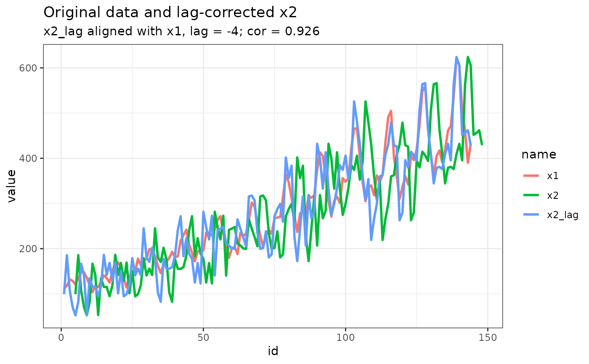

x1 is reference, cross-correlation for x2 is calculated and the maximum (see cor_goal) correlation is returned along with the lag (see lag_max) at which it is attained.
time series object
time series object
range of lags, passed to stats::ccf; can also be two limits c(-10, 5) for range of lags for x2 to align with x1 (if x2 lags behind, then lag will be negative)
"max" for maximum (typically positive) correlation, "min" for minimum (typically negative) correlation, "abs" for maximum absolute correlation (largest positive or negative)
list cor = maximum correlation, lag = lag to shift x2 to align with x1 for maximum correlation
n_shift = 4
n_obs <- n_shift + length(datasets::AirPassengers)
dat_ex <-
tibble::tibble(
id = seq_len(n_obs)
, x1 = c(datasets::AirPassengers, rep(NA, n_shift))
, x2 = c(rep(NA, n_shift), datasets::AirPassengers)
) |>
dplyr::mutate(
x2 = x2 + rnorm(n = length(x2), mean = 0, sd = sd(x2, na.rm = TRUE) / 3)
)
# largest absolute correlation
out_ccf <-
e_ccf_max(
x1 = dat_ex$x1
, x2 = dat_ex$x2
, lag_max = 10
, cor_goal = c("max", "min", "abs")[3]
)
out_ccf
#> $cor
#> [1] 0.9258203
#>
#> $lag
#> [1] -4
#>
dat_ex <-
dat_ex |>
dplyr::mutate(
x2_lag =
dplyr::case_when(
out_ccf$lag == 0 ~ x2
, out_ccf$lag > 0 ~ x2 |> dplyr::lag (n = abs(out_ccf$lag))
, out_ccf$lag < 0 ~ x2 |> dplyr::lead(n = abs(out_ccf$lag))
, .default = x2
)
)
dat_ex_long <- dat_ex |> tidyr::pivot_longer(cols = -id) #c("x1", "x2", "x2_lag"))
library(ggplot2)
p <- ggplot(dat_ex_long, aes(x = id, y = value, colour = name))
p <- p + theme_bw()
p <- p + geom_line(linewidth = 1)
p <- p + labs( title = "Original data and lag-corrected x2"
, subtitle = paste0("x2_lag aligned with x1, lag = ", out_ccf$lag
, "; cor = ", out_ccf$cor |> signif(3))
)
print(p)
#> Warning: Removed 12 rows containing missing values or values outside the scale range
#> (`geom_line()`).

# minimum correlation
e_ccf_max(
x1 = dat_ex$x1
, x2 = dat_ex$x2
, lag_max = c(0, 20)
, cor_goal = c("max", "min", "abs")[2]
)
#> $cor
#> [1] 0.4300697
#>
#> $lag
#> [1] 16
#>